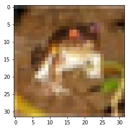
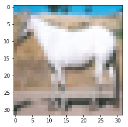

Transfer Learning
Transfer learning is the act of using a pre-trained network as a way to give you a huge head start on training a neural network for whatever your current application is. There are a number of canonical networks floating around, all trained on significantly-better hardware than you or I readliy have on hand, furthermore, because so many of the earlier layers are so abstract, they’re often useful for whatever purpose you’re designing with, out of the box.
A Dataset
%pylab inline
from keras.datasets import cifar10
from sklearn.model_selection import train_test_splitPopulating the interactive namespace from numpy and matplotlib
Using TensorFlow backend.
(x_train, y_train), (x_test, y_test) = cifar10.load_data()
x_dev, x_test, y_dev, y_test = train_test_split(x_test, y_test, test_size=.6, train_size=.4)It’s comprised of 60 thousand records.
len(x_train), len(x_dev), len(x_test)(50000, 4000, 6000)
Where each image is 32 x 32
x_train[0].shape(32, 32, 3)
and an RGB image sampled from 10 different classes
np.unique(y_train)array([0, 1, 2, 3, 4, 5, 6, 7, 8, 9], dtype=uint8)
including
CLASSES = ['AIRPLANE', 'AUTOMOBILE', 'BIRD', 'CAT', 'DEER',
'DOG', 'FROG', 'HORSE', 'SHIP', 'TRUCK']plt.imshow(x_train[0])<matplotlib.image.AxesImage at 0x199e3ba8>

However, to predict in a multi-class fashion, we’ll need to go from one column vector of integers
y_train.shape(50000, 1)
To encoded representations of the same data
from keras.utils import to_categorical
y_train = to_categorical(y_train)
y_dev = to_categorical(y_dev)
y_test = to_categorical(y_test)y_train.shape(50000, 10)
Borrowing VGG
For simplicity’s sake, we’re going to load the VGG Architecture for our transfer learning.
It was trained on 224x244 images, targeting 10 different classes. But because our image size is of a different resolution, we can’t utilize the 3 hidden layers that come with VGG (hence the arguments below).
from keras.applications.vgg16 import VGG16
model = VGG16(input_shape=(32, 32, 3), include_top=False)If we call model.predict() on one of our inputs, we obviously don’t get back the multiclass prediction we’re after.
model.predict(x_train[0:5]).shape(5, 1, 1, 512)
We want to reference the first and last layers for our next steps. Looking at the summary, we can see the names of each layer.
model.summary()_________________________________________________________________
Layer (type) Output Shape Param #
=================================================================
input_1 (InputLayer) (None, 32, 32, 3) 0
_________________________________________________________________
block1_conv1 (Conv2D) (None, 32, 32, 64) 1792
_________________________________________________________________
block1_conv2 (Conv2D) (None, 32, 32, 64) 36928
_________________________________________________________________
block1_pool (MaxPooling2D) (None, 16, 16, 64) 0
_________________________________________________________________
block2_conv1 (Conv2D) (None, 16, 16, 128) 73856
_________________________________________________________________
block2_conv2 (Conv2D) (None, 16, 16, 128) 147584
_________________________________________________________________
block2_pool (MaxPooling2D) (None, 8, 8, 128) 0
_________________________________________________________________
block3_conv1 (Conv2D) (None, 8, 8, 256) 295168
_________________________________________________________________
block3_conv2 (Conv2D) (None, 8, 8, 256) 590080
_________________________________________________________________
block3_conv3 (Conv2D) (None, 8, 8, 256) 590080
_________________________________________________________________
block3_pool (MaxPooling2D) (None, 4, 4, 256) 0
_________________________________________________________________
block4_conv1 (Conv2D) (None, 4, 4, 512) 1180160
_________________________________________________________________
block4_conv2 (Conv2D) (None, 4, 4, 512) 2359808
_________________________________________________________________
block4_conv3 (Conv2D) (None, 4, 4, 512) 2359808
_________________________________________________________________
block4_pool (MaxPooling2D) (None, 2, 2, 512) 0
_________________________________________________________________
block5_conv1 (Conv2D) (None, 2, 2, 512) 2359808
_________________________________________________________________
block5_conv2 (Conv2D) (None, 2, 2, 512) 2359808
_________________________________________________________________
block5_conv3 (Conv2D) (None, 2, 2, 512) 2359808
_________________________________________________________________
block5_pool (MaxPooling2D) (None, 1, 1, 512) 0
=================================================================
Total params: 14,714,688
Trainable params: 14,714,688
Non-trainable params: 0
_________________________________________________________________
We’ll use model.get_layer() to reference a layer by name, then .output to get its symbolic reference that we can use as an input later
input_layer = model.input
last_pooling_layer = model.outputThis allows us to tack on the typical Fully Connected layers that we see at the end of convolutional networks.
from keras.layers import Flatten, Dense
flatten = Flatten()(last_pooling_layer)
fc1 = Dense(100, activation='relu', )(flatten)
fc2 = Dense(100, activation='relu')(fc1)
output_layer = Dense(10, activation='softmax')(fc2)All of the architecting out of the way, let’s save this as its own object now, creating a new Model object and telling it where execution starts and ends.
from keras.models import Model
custom_model = Model(input_layer, output_layer)If you look at a summary, you’ll notice our 3 Fully Connected layers are now integrated.
custom_model.summary()_________________________________________________________________
Layer (type) Output Shape Param #
=================================================================
input_1 (InputLayer) (None, 32, 32, 3) 0
_________________________________________________________________
block1_conv1 (Conv2D) (None, 32, 32, 64) 1792
_________________________________________________________________
block1_conv2 (Conv2D) (None, 32, 32, 64) 36928
_________________________________________________________________
block1_pool (MaxPooling2D) (None, 16, 16, 64) 0
_________________________________________________________________
block2_conv1 (Conv2D) (None, 16, 16, 128) 73856
_________________________________________________________________
block2_conv2 (Conv2D) (None, 16, 16, 128) 147584
_________________________________________________________________
block2_pool (MaxPooling2D) (None, 8, 8, 128) 0
_________________________________________________________________
block3_conv1 (Conv2D) (None, 8, 8, 256) 295168
_________________________________________________________________
block3_conv2 (Conv2D) (None, 8, 8, 256) 590080
_________________________________________________________________
block3_conv3 (Conv2D) (None, 8, 8, 256) 590080
_________________________________________________________________
block3_pool (MaxPooling2D) (None, 4, 4, 256) 0
_________________________________________________________________
block4_conv1 (Conv2D) (None, 4, 4, 512) 1180160
_________________________________________________________________
block4_conv2 (Conv2D) (None, 4, 4, 512) 2359808
_________________________________________________________________
block4_conv3 (Conv2D) (None, 4, 4, 512) 2359808
_________________________________________________________________
block4_pool (MaxPooling2D) (None, 2, 2, 512) 0
_________________________________________________________________
block5_conv1 (Conv2D) (None, 2, 2, 512) 2359808
_________________________________________________________________
block5_conv2 (Conv2D) (None, 2, 2, 512) 2359808
_________________________________________________________________
block5_conv3 (Conv2D) (None, 2, 2, 512) 2359808
_________________________________________________________________
block5_pool (MaxPooling2D) (None, 1, 1, 512) 0
_________________________________________________________________
flatten_1 (Flatten) (None, 512) 0
_________________________________________________________________
dense_1 (Dense) (None, 100) 51300
_________________________________________________________________
dense_2 (Dense) (None, 100) 10100
_________________________________________________________________
dense_3 (Dense) (None, 10) 1010
=================================================================
Total params: 14,777,098
Trainable params: 14,777,098
Non-trainable params: 0
_________________________________________________________________
Training
We’re likely pretty happy with all of the feature extraction layers, so we’re not going to bother training them.
for layer in custom_model.layers:
if 'dense' not in layer.name:
layer.trainable = FalseSo all that remains for training are the Weights and Biases of of our last 3 layers.
custom_model.trainable_weights[<tf.Variable 'dense_1/kernel:0' shape=(512, 100) dtype=float32_ref>,
<tf.Variable 'dense_1/bias:0' shape=(100,) dtype=float32_ref>,
<tf.Variable 'dense_2/kernel:0' shape=(100, 100) dtype=float32_ref>,
<tf.Variable 'dense_2/bias:0' shape=(100,) dtype=float32_ref>,
<tf.Variable 'dense_3/kernel:0' shape=(100, 10) dtype=float32_ref>,
<tf.Variable 'dense_3/bias:0' shape=(10,) dtype=float32_ref>]
custom_model.compile(optimizer='adam', loss='categorical_crossentropy', metrics=['accuracy'])custom_model.fit(x_train, y_train, validation_data=(x_dev, y_dev), epochs=25)Train on 50000 samples, validate on 4000 samples
Epoch 1/25
50000/50000 [==============================] - 32s 646us/step - loss: 1.8955 - acc: 0.4630 - val_loss: 1.3347 - val_acc: 0.5397
Epoch 2/25
50000/50000 [==============================] - 33s 656us/step - loss: 1.2259 - acc: 0.5744 - val_loss: 1.2499 - val_acc: 0.5780
Epoch 3/25
50000/50000 [==============================] - 31s 629us/step - loss: 1.1236 - acc: 0.6121 - val_loss: 1.2266 - val_acc: 0.5815
Epoch 4/25
50000/50000 [==============================] - 32s 641us/step - loss: 1.0603 - acc: 0.6337 - val_loss: 1.1724 - val_acc: 0.6012
Epoch 5/25
50000/50000 [==============================] - 31s 628us/step - loss: 1.0053 - acc: 0.6502 - val_loss: 1.1501 - val_acc: 0.6138
Epoch 6/25
50000/50000 [==============================] - 31s 628us/step - loss: 0.9580 - acc: 0.6668 - val_loss: 1.1921 - val_acc: 0.5975
Epoch 7/25
50000/50000 [==============================] - 32s 636us/step - loss: 0.9155 - acc: 0.6802 - val_loss: 1.1791 - val_acc: 0.6178
Epoch 8/25
50000/50000 [==============================] - 31s 620us/step - loss: 0.8741 - acc: 0.6945 - val_loss: 1.2193 - val_acc: 0.6160
Epoch 9/25
50000/50000 [==============================] - 31s 625us/step - loss: 0.8395 - acc: 0.7055 - val_loss: 1.2446 - val_acc: 0.6140
Epoch 10/25
50000/50000 [==============================] - 32s 640us/step - loss: 0.8053 - acc: 0.7183 - val_loss: 1.2829 - val_acc: 0.6062
Epoch 11/25
50000/50000 [==============================] - 34s 678us/step - loss: 0.7711 - acc: 0.7288 - val_loss: 1.3255 - val_acc: 0.5990
Epoch 12/25
50000/50000 [==============================] - 33s 651us/step - loss: 0.7439 - acc: 0.7373 - val_loss: 1.3539 - val_acc: 0.6000
Epoch 13/25
50000/50000 [==============================] - 31s 617us/step - loss: 0.7189 - acc: 0.7457 - val_loss: 1.4021 - val_acc: 0.6028
Epoch 14/25
50000/50000 [==============================] - 31s 616us/step - loss: 0.6947 - acc: 0.7545 - val_loss: 1.4472 - val_acc: 0.5970
Epoch 15/25
50000/50000 [==============================] - 31s 615us/step - loss: 0.6701 - acc: 0.7632 - val_loss: 1.4971 - val_acc: 0.5880
Epoch 16/25
50000/50000 [==============================] - 31s 616us/step - loss: 0.6518 - acc: 0.7682 - val_loss: 1.5427 - val_acc: 0.5930
Epoch 17/25
50000/50000 [==============================] - 31s 615us/step - loss: 0.6359 - acc: 0.7738 - val_loss: 1.5885 - val_acc: 0.5913
Epoch 18/25
50000/50000 [==============================] - 31s 615us/step - loss: 0.6161 - acc: 0.7806 - val_loss: 1.6323 - val_acc: 0.5873
Epoch 19/25
50000/50000 [==============================] - 31s 616us/step - loss: 0.6011 - acc: 0.7866 - val_loss: 1.6787 - val_acc: 0.5998
Epoch 20/25
50000/50000 [==============================] - 31s 614us/step - loss: 0.5828 - acc: 0.7934 - val_loss: 1.7442 - val_acc: 0.5857
Epoch 21/25
50000/50000 [==============================] - 31s 615us/step - loss: 0.5753 - acc: 0.7989 - val_loss: 1.7199 - val_acc: 0.5897
Epoch 22/25
50000/50000 [==============================] - 31s 628us/step - loss: 0.5600 - acc: 0.8026 - val_loss: 1.7905 - val_acc: 0.5935
Epoch 23/25
50000/50000 [==============================] - 31s 620us/step - loss: 0.5425 - acc: 0.8057 - val_loss: 1.8651 - val_acc: 0.5820
Epoch 24/25
50000/50000 [==============================] - 31s 616us/step - loss: 0.5361 - acc: 0.8101 - val_loss: 1.9242 - val_acc: 0.5863
Epoch 25/25
50000/50000 [==============================] - 30s 607us/step - loss: 0.5228 - acc: 0.8148 - val_loss: 1.9657 - val_acc: 0.5873
<keras.callbacks.History at 0x1c314a90>
Huzzah, it’s only kind of crap!
custom_model.evaluate(x_test, y_test)6000/6000 [==============================] - 2s 356us/step
[2.0322601051330564, 0.5828333333333333]
test_idx = 1test_image = x_test[test_idx]
plt.imshow(test_image)<matplotlib.image.AxesImage at 0x5316978>

# tensorflow expects multiple records, thus
# a 4th dimension
test_image = test_image.reshape(1, 32, 32, 3)result = custom_model.predict(test_image)print('Prediction:', CLASSES[result.argmax()])
print('Actual: ', CLASSES[y_test[test_idx].argmax()])Prediction: TRUCK
Actual: HORSE